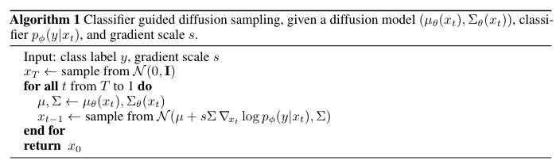
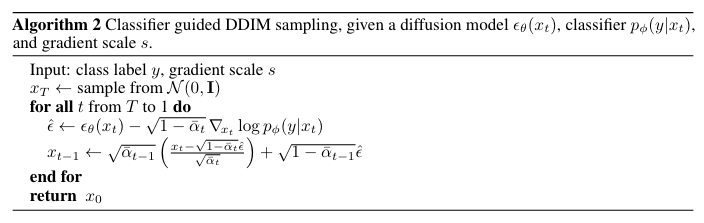
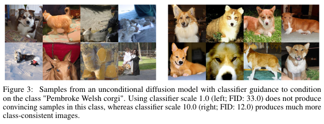
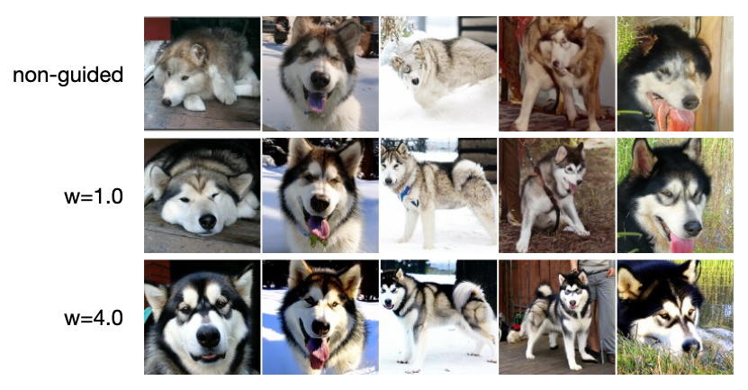

扩散模型条件引导生成
\[ \newcommand{\x}{\mathbf x} \newcommand{\calN}{\mathcal N} \newcommand{\coloneqq}{\mathrel{\mathrel{\vcenter{:}}=}} \]
Preface
我们在之前的文章中关注的都是无条件生成，生成结果不受我们控制，特别是以 DDPM 为代表的采样过程本身就带有随机性的模型，即使用同样的初始变量也会得到完全不同的结果。但是，有条件的生成（受控生成）却又非常重要：以类别标签为条件可以让我们控制生成的类别；图像恢复、图像填充、图像编辑等任务可以视为以已知图像为条件的生成任务；另外，以文本为条件来跨模态地指导图像生成更是给予了我们无限的发挥创造力的空间。本文就梳理一下为扩散模型加入条件的一些方法。
Class Embeddings
最简单的加入类别条件的方法就是给模型输入 class embeddings. 在论文[1]中，作者将 class embeddings 连同 time embeddings 一起给到了 AdaGN 层： \[ \text{AdaGN}(h,y)=y_s\ \text{GroupNorm}(h)+y_b \] 其中 \(h\) 是各个 residual block 第一个卷积之后的激活输出，\(y=[y_s,y_b]\) 由 timestep 和 class embeddings 经过一个全连接层得到。相比 DDPM 把 time embeddings 直接加到激活上再做 GroupNorm，作者发现使用 AdaGN 能得到更好的效果。
Classifier Guidance
顾名思义，classifier guidance 引入额外的分类器 \(p(y\vert \x_t)\) 来实现条件生成，其思想在论文[2]中其实已经提出了，但在论文[1]中得到了进一步的研究。为了引入分类器，作者实际上做了两种推导，分别适用于 DDPM 和 DDIM（虽然我觉得后一种也可以用于 DDPM）。
Conditional Reverse Noising Process
对于带条件的扩散模型，其逆向过程可以写作： \[ \begin{align} &p(\x_t\vert\x_{t+1},y)=Z p(\x_t\vert\x_{t+1})p(y\vert \x_t) \tag{1}\label{conditional-markov}\\ &\log{p}(\x_t\vert\x_{t+1},y)=\log{p}(\x_t\vert\x_{t+1})+\log{p}(y\vert \x_t)\\ \end{align} \] 其中 \(Z\) 是与 \(\x_t\) 无关的常数项。这个式子看着简单，但其实并不是那么显然，证明过程见本节末尾。
上式右边包含两项，其中 \(p(\x_t\vert\x_{t+1})\) 与无条件的逆向过程相同： \[ \begin{align} &p(\x_t\vert\x_{t+1})=\calN(\x_t;\mu,\Sigma)\\ &\log{p}(\x_t\vert\x_{t+1})=-\frac{1}{2}(\x_t-\mu)^T\Sigma^{-1}(\x_t-\mu)+C \end{align} \] 而 \(\log{p}(y\vert\x_t)\) 一项可以在 \(\mu\) 处进行一阶泰勒展开： \[ \begin{align} \log{p}(y\vert\x_t)&\approx\log{p}(y\vert\x)\big|_{\x=\mu}+(\x_t-\mu)\nabla_{\x}\log{p}(y\vert\x)\big|_{\x=\mu}\\ &=(\x_t-\mu)g+C_1 \end{align} \] 其中 \(g=\nabla_{\x}\log{p}(y\vert \x)\big|_{\x=\mu}\). 于是， \[ \begin{align} \log{p}(\x_t\vert\x_{t+1},y)&\approx-\frac{1}{2}(\x_t-\mu)^T\Sigma^{-1}(\x_t-\mu)+(\x_t-\mu)g+C_2\\ &=-\frac{1}{2}(\x_t-\mu-\Sigma g)^{-1}\Sigma^{-1}(\x_t-\mu-\Sigma g)+C_3\\ \end{align} \] 即： \[ p(\x_t\vert \x_{t+1},y)\sim\calN(\x_t;\mu+\Sigma g,\Sigma) \] 这意味着有条件的逆向过程与无条件的唯一差别在于：前者的均值在后者的基础上偏移了一个 \(\Sigma g\). 直观上，由于偏移的方向沿着分类器提供的梯度 \(g\)，而这个梯度恰恰反映了应该如何移动才能让指定类别概率最大，所以偏移后的分布更能体现给定的类别条件，这就是分类器的引导作用。算法总结如下（其中 gradient scale 在后文解释）：

注意！根据我们的推导，我们应该在 \(\mu\) 处取梯度，但是算法截图和官方代码却是在 \(\x_t\) 处求的梯度。为验证这确实是一个 bug，我 google 了许久，最后看到有个老哥提了相关的 issue，并得到了原作者的肯定答复：
Yes, this is indeed a slight bug, which we noticed shortly after releasing our work. However, we did try ablating using the correct formula, and found that it didn't noticeably change results.
另外，这老哥还发了一个 YouTube video 讲这篇论文，挺不错的，推荐观看。
Conditional Sampling for DDIM
上述推导并不适用于 DDIM 的确定性采样过程（\(\Sigma=\mathbf 0\)），因此我们需要另一种推导方式。
我们知道扩散模型的本质是在拟合 score function. 在无条件的扩散模型中，score function 为 \(\nabla_{\x_t}\log{p}(\x_t)\)；那么若以类别标签 \(y\) 为条件，则 score function 为： \[ \begin{align} \nabla_{\x_t}\log{p}(\x_t\vert y)&=\nabla_{\x_t} \log\left(\frac{p(\x_t)p(y\vert\x_t)}{p(y)}\right)\\ &=\nabla_{\x_t}\log{p}(\x_t)+\nabla_{\x_t}\log{p}(y\vert \x_t)-\nabla_{\x_t}\log{p}(y)\\ &=\underbrace{\nabla_{\x_t}\log{p}(\x_t)}_{\text{unconditional score}}+\underbrace{\nabla_{\x_t}\log{p}(y\vert \x_t)}_\text{classifier guidance} \tag{2}\label{classifier-guidance} \end{align} \] 可以看见，有条件的 score function，等于无条件的 score function 加上分类器关于输入的梯度。由于我们知道扩散模型的采样其实就是沿着 score function 的方向走，所以 unconditional score 一项是在增大 \(p(\x_t)\)，即让样本越来越真实；classifier guidance 一项是在增大 \(p(y\vert \x_t)\)，即让样本更能匹配上输入的条件 \(y\)，从而实现条件生成。
由于 DDPM / DDIM 中的噪声 \(\epsilon(\x_t)\) 和 score function 有如下联系（详见 Score Based Generative Models 一文）： \[ \nabla_{\x_t}\log{p}(\x_t)=-\frac{1}{\sqrt{1-\bar\alpha_t}}\epsilon(\x_t) \] 所以我们只需要定义一个新的噪声： \[ \hat\epsilon(\x_t)=\epsilon(\x_t)-\sqrt{1-\bar\alpha_t}\nabla_{\x_t}\log{p}(y\vert\x_t) \] 那么把原本的所有 \(\epsilon\) 换做 \(\hat\epsilon\) 就可以实现条件生成了。

两种推导的区别和联系
不知道是否有人有和我一样的疑问，为什么作者要做两种推导，或者说，为什么不在第一种情形中也用第二种推导的结论？
如果我们把第二种推导也应用在 DDPM 里，由于原本的无条件 DDPM 的逆向过程是： \[\begin{align}&p(\x_{t-1}\vert\x_t)=\calN(\x_{t};\mu(\x_t),\sigma^2_t\mathbf I)\\\text{where}\quad&\mu(\x_t)=\frac{1}{\sqrt{\alpha_t}}\left(\x_t-\frac{1-\alpha_t}{\sqrt{1-\bar\alpha_t}}\epsilon(\x_t)\right)\end{align}\] 代入新的噪声，那么新的均值为： \[\begin{align}\hat\mu(\x_t)&=\frac{1}{\sqrt{\alpha_t}}\left(\x_t-\frac{1-\alpha_t}{\sqrt{1-\bar\alpha_t}}\hat\epsilon(\x_t)\right)\\&=\frac{1}{\sqrt{\alpha_t}}\left(\x_t-\frac{1-\alpha_t}{\sqrt{1-\bar\alpha_t}}\left(\epsilon(\x_t)-\sqrt{1-\bar\alpha_t}\nabla_{\x_t}\log{p}(y\vert\x_t)\right)\right)\\&=\frac{1}{\sqrt{\alpha_t}}\left(\x_t-\frac{1-\alpha_t}{\sqrt{1-\bar\alpha_t}}\epsilon(\x_t)\right)+\frac{1-\alpha_t}{\sqrt{\alpha_t}}\nabla_{\x_t}\log{p}(y\vert\x_t)\\&=\mu(\x_t)+\frac{1-\alpha_t}{\sqrt{\alpha_t}}\nabla_{\x_t}\log{p}(y\vert\x_t)\end{align}\]
对比 Algorithm 1，可见主要区别是均值的偏移量从 \(\Sigma g\) 变成了 \(\frac{1-\alpha_t}{\sqrt{\alpha_t}}\nabla_{\x_t}\log{p}(y\vert\x_t)\). 注意，前者是在 \(\mu(\x_t)\) 处取的梯度，而后者是在 \(\x_t\) 处取的梯度。考虑到 \(\mu(\x_t)\) 和 \(\x_t\) 差别不大，且 \(\Sigma\)（常取 \(\beta_t\) 或者 \(\tilde\beta_t\)）与 \(\frac{1-\alpha_t}{\sqrt{\alpha_t}}=\frac{1}{\sqrt{1-\beta_t}}\beta_t\) 的差别也不大，所以二者的性能可能相近吧，有待实验验证。
在实验中，作者发现直接按上述结论做条件生成的效果并不理想，如下左图所示：

于是作者给分类器梯度项添加了一个权重系数 \(s\)，权重越大，则生成的图像越靠近指定类别，但代价是多样性下降： \[ \nabla_{\x_t}\log{p}_s(\x_t\vert y)=\nabla_{\x_t}\log{p}(\x_t)+s \nabla_{\x_t}\log{p}(y\vert \x_t) \tag{3}\label{classifier-s} \] 对应的噪声表示变成： \[ \hat\epsilon_{0t}=\epsilon_{0t}-s\cdot\sqrt{1-\bar\alpha_t}\nabla_{\x_t}\log{p}(y\vert\x_t) \] 怎么理解权重系数发挥的作用呢？注意到 \(s\nabla_{\x_t}\log{p}(y\vert \x_t)=\nabla_{\x_t}\log \frac{1}{Z}p(y\vert \x_t)^s\)，所以我们其实是人为把分类器的输出分布 \(p(y\vert\x_t)\) 重新归一化成了正比于 \(p(y\vert\x_t)^s\) 的分布。当 \(s>1\) 时，分布变得更加陡峭，也就让生成结果更靠近指定类别，但同时损失一定的多样性。所以对 \(s\) 的调整体现出了 diversity-fidelity trade-off（类似 BigGAN 中的 truncation trick），其中 diversity 可以用 FID 来衡量，而 fidelity 用 IS 来衡量。
需要说明的是，classifier guidance 与输入 class embeddings 并不矛盾，二者共同作用能达到更好的效果。后者是加入条件的最基本做法，而无论模型是否带有条件，都可以用分类器做引导。也就是说，条件（condition）和引导（guidance）是两种不同但相辅相成的方法。
最后，虽然我们是视 \(y\) 为类别标签来阐释的，但该方法也可以扩展到文本指导图像等其他条件生成场景之中。该方法还有一个好处是我们可以先在无标签的数据集上训练生成模型，事后再灵活地适应到有标签的场景下，鉴于无标签数据集往往比有标签数据集大很多，这有助于我们更好地训练模型。
附录：关于 \(\eqref{conditional-markov}\) 式的推导（原论文 Appendix H）
对标无条件马尔可夫链，我们用 \(\hat{q}\) 来表示带条件马尔可夫链中的概率分布，包括： \[\begin{align}\hat{q}(\x_0)&\coloneqq q(\x_0)\\\hat{q}(y\vert \x_0)&\coloneqq\text{Known labels per sample}\\\hat{q}(\x_{t+1}\vert \x_t,y) &\coloneqq q(\x_{t+1}\vert \x_t)\\\hat{q}(\x_{1:T}\vert \x_0,y) &\coloneqq \prod_{t=1}^T \hat{q}(\x_t\vert \x_{t-1},y)\end{align}\] 其中最关键的是第三个式子，表示条件与扩散过程无关。在上述定义下，我们发现当没有 \(y\) 作为条件时，\(\hat{q}\) 和 \(q\) 其实是完全相同的。具体而言，我们有： \[\begin{align}\hat{q}(\x_{t+1}\vert \x_t)&=\int_y \hat{q}(\x_{t+1},y\vert \x_t)\mathrm{d}y\\&=\int_y \hat{q}(\x_{t+1}\vert \x_t,y)\hat{q}(y\vert \x_t)\mathrm{d}y\\&=\int_y q(\x_{t+1}\vert \x_t)\hat{q}(y\vert \x_t)\mathrm{d}y\\&=q(\x_{t+1}\vert \x_t)=\hat{q}(\x_{t+1}\vert \x_t,y)\end{align}\] 即每一步转移概率分布都是相同的。类似的，有： \[\begin{align}\hat{q}(\x_{1:T}\vert \x_0)&=\int_y \hat{q}(\x_{1:T},y\vert \x_0)\mathrm{d}y\\&=\int_y \hat{q}(\x_{1:T}\vert \x_0,y)\hat{q}(y\vert\x_0)\mathrm{d}y\\&=\int_y \hat{q}(y\vert\x_0)\prod_{t=1}^T\hat{q}(\x_t\vert \x_{t-1},y)\mathrm{d}y\\&=\int_y \hat{q}(y\vert\x_0)\prod_{t=1}^T q(\x_t\vert \x_{t-1})\mathrm{d}y\\&=\prod_{t=1}^T q(\x_t\vert \x_{t-1})\int_y \hat{q}(y\vert\x_0)\mathrm{d}y\\&=q(\x_{1:T}\vert \x_0)\end{align}\] 结合 \(\hat{q}(\x_0)=q(\x_0)\)，我们知道联合分布也是相同的。进一步： \[\begin{align}\hat{q}(\x_t)&=\int_{\x_{0:t-1}}\hat{q}(\x_0,\ldots,\x_t)\mathrm{d}\x_{0:t-1}\\&=\int_{\x_{0:t-1}}\hat{q}(\x_1,\ldots,\x_t\vert\x_0)\hat{q}(\x_0)\mathrm{d}\x_{0:t-1}\\&=\int_{\x_{0:t-1}} q(\x_1,\ldots,\x_t\vert\x_0)q(\x_0)\mathrm{d}\x_{0:t-1}\\&=\int_{\x_{0:t-1}} q(\x_0,\ldots,\x_t)\mathrm{d}\x_{0:t-1}\\&=q(\x_t)\end{align}\] 即边缘分布也都是相同的。有了边缘分布和转移概率，根据贝叶斯公式： \[\hat{q}(\x_t\vert \x_{t+1})=\frac{\hat{q}(\x_{t+1}\vert \x_t)\hat{q}(\x_t)}{\hat{q}(\x_{t+1})}=\frac{q(\x_{t+1}\vert \x_t)q(\x_t)}{q(\x_{t+1})}=q(\x_t\vert \x_{t+1})\] 我们知道逆向过程的每一步也是相同的。另外，我们还有： \[\begin{align}\hat{q}(y\vert \x_t,\x_{t+1})&=\frac{\hat{q}(\x_{t+1}\vert \x_t,y)\hat{q}(y\vert \x_t)}{\hat{q}(\x_{t+1}\vert\x_t)}\\&=\frac{q(\x_{t+1}\vert \x_t)\hat{q}(y\vert \x_t)}{q(\x_{t+1}\vert\x_t)}\\&=\hat{q}(y\vert \x_t)\end{align}\] 那么，加入条件后的逆向过程为： \[\begin{align}\hat{q}(\x_t\vert \x_{t+1},y)&=\frac{\hat{q}(y\vert\x_t,\x_{t+1})\hat{q}(\x_t\vert \x_{t+1})}{\hat{q}(y\vert \x_{t+1})}\\&=\frac{\hat{q}(y\vert\x_{t})\hat{q}(\x_t\vert \x_{t+1})}{\hat{q}(y\vert \x_{t+1})}\\&=\frac{\hat{q}(y\vert\x_{t})q(\x_t\vert \x_{t+1})}{\hat{q}(y\vert \x_{t+1})}\\&=Z\hat{q}(y\vert\x_{t})q(\x_t\vert \x_{t+1})\end{align}\] 其中 \(Z=\hat{q}(y\vert\x_{t+1})\) 是与 \(\x_t\) 无关的常数项。我们已经用 \(p(\x_t\vert\x_{t+1})\) 来近似了 \(q(\x_t\vert\x_{t+1})\)，所以只需要再训练一个分类器 \(p(y\vert \x_t)\) 来近似 \(\hat{q}(y\vert\x_t)\)，就得到了 \(\eqref{conditional-markov}\) 式。
Classifier-Free Guidance
Classifier guidance 虽然成功地为扩散模型提供了引导，并引入了 diversity-fidelity tradeoff，但是其劣势也很明显：我们必须额外训练一个分类器，而且该分类器需要对所有 noise scale 都有分类能力，所以还不能直接加载常见的预训练模型。因此，classifier-free guidance[3] 应运而生。
首先，我们重新排列 \(\eqref{classifier-guidance}\) 式得到： \[ \nabla_{\x_t}\log{p}(y\vert \x_t)=\nabla_{\x_t}\log{p}(\x_t\vert y)-\nabla_{\x_t}\log{p}(\x_t) \] 代入 \(\eqref{classifier-s}\) 式得： \[ \begin{align} \nabla_{\x_t}\log{p}_s(\x_t\vert y)&=\nabla_{\x_t}\log{p}(\x_t)+s\left(\nabla_{\x_t}\log{p}(\x_t\vert y)-\nabla_{\x_t}\log{p}(\x_t)\right)\\ &=\nabla_{\x_t}\log{p}(\x_t)+s\nabla_{\x_t}\log{p}(\x_t\vert y)-s\nabla_{\x_t}\log{p}(\x_t)\\ &=(1-s)\underbrace{\nabla_{\x_t}\log{p}(\x_t)}_\text{unconditional score}+s\underbrace{\nabla_{\x_t}\log{p}(\x_t\vert y)}_\text{conditional score} \end{align} \] 这是无条件和有条件的 score function 的线性组合，\(s\) 同样是控制条件引导力度的系数。当 \(s=0\) 时，就是无条件模型；当 \(s=1\) 时，就是标准的有条件模型；而当 \(s>1\) 时，不仅 conditional score 被进一步加强，而且 unconditional score 甚至变成了负向！同 classifier guidance 一样，我们可以通过调节 \(s\) 实现 diversity-fidelity trade-off，\(s\) 越大，条件指向性越强，生成结果越真实，但是多样性下降。
注：上述权重记号与原论文有所不同，原论文写作： \[ \nabla_{\x_t}\log{p}_w(\x_t\vert y)=(1+w)\nabla_{\x_t}\log{p}(\x_t\vert y)-w\nabla_{\x_t}\log{p}(\x_t) \] 即本文和原论文的记号有如下关系：\(w=s-1\).

在实现上，我们用 \(p(\x_t\vert y)\) 表示有条件模型，同时用 null token \(\varnothing\) 表示无条件限制，即 \(p(\x_t\vert\varnothing)\) 表示无条件模型。这样就可以只训练一个模型，同时处理有条件和无条件两种情况了。训练时随机以 \(p_\text{uncond}\) 的概率去掉输入条件（换成 \(\varnothing\)），即相当于同时训练了有条件和无条件情形，实验发现取 \(p_\text{uncond}\in\{0.1,0.2\}\) 效果最好。
由于 classifier-free guidance 的效果非常优秀且训练方便，后续许多著名的模型，包括 GLIDE、DALL-E 2 (unCLIP)、Imagen 等都应用了 classifier-free guidance. 而至于这些让扩散模型火出圈的应用，我们留到以后的文章吧。
Summary
在本文中，我们说明了为模型加入条件其实包括两方面：
- Condition：我们可以直接把条件输入给模型，使之从 unconditional model 变成 conditional model；针对条件的不同形式，把条件融入模型架构的方式也不同，比如用 AdaGN 来融合 class embedding；
- Guidance：我们可以用显式或隐式的分类器为生成过程加入条件引导，即 classifier guidance 或 classifier-free guidance.
需要注意的是，condition 和 guidance 是两种不同的技术，我们可以只用 conditional model 而没有 guidance，也可以对 unconditional model 做显式的 guidance，它们都能达到条件生成的目的。当然，二者同时使用往往能取得更好的效果。
在之后的文章中，我们将聚焦基于扩散模型的应用。这些应用几乎都离不开条件生成，譬如，超分、去模糊、填充等图像恢复任务可以视为以退化图像为条件的生成任务，图像编辑、图像翻译等任务可以视为以源图像/参考图像为条件的生成任务，根据文本描述生成或编辑图像显然是以文本为条件的生成任务……那么，针对这些任务，许多工作就是在如何加入 condition 和如何施加 guidance 两方面下功夫。
References
- Dhariwal, Prafulla, and Alexander Nichol. Diffusion models beat gans on image synthesis. Advances in Neural Information Processing Systems 34 (2021): 8780-8794. ↩︎
- Song, Yang, Jascha Sohl-Dickstein, Diederik P. Kingma, Abhishek Kumar, Stefano Ermon, and Ben Poole. Score-Based Generative Modeling through Stochastic Differential Equations. In International Conference on Learning Representations. 2020. ↩︎
- Ho, Jonathan, and Tim Salimans. Classifier-Free Diffusion Guidance. In NeurIPS 2021 Workshop on Deep Generative Models and Downstream Applications. 2021. ↩︎
- Luo, Calvin. Understanding diffusion models: A unified perspective. arXiv preprint arXiv:2208.11970 (2022). ↩︎
- 扩散模型与受控图像生成-脉络梳理 - 中森的文章 - 知乎 https://zhuanlan.zhihu.com/p/585938939 ↩︎
- Sander Dieleman. Guidance: a cheat code for diffusion models. https://benanne.github.io/2022/05/26/guidance.html ↩︎